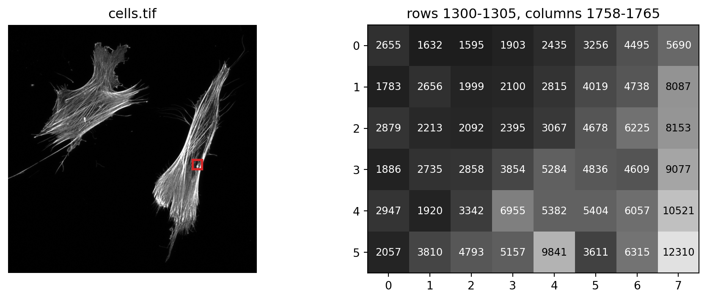
Biomedical Engineering Skills 3
Week 4: images are arrays
Massimo Vassalli
massimo.vassalli@glasgow.ac.uk
Where we are
DEFINE → DECOMPOSE → SPECIFY ⇄ DIAGNOSE → VALIDATE
Weeks 2 and 3: signals, one dimension. Weeks 4 to 6: images, and one pipeline built over three weeks: this week the image itself and how to prepare it; next week, which pixels are objects; then, measuring the objects.
By the end of today you should be able to:
- read an image file into an array and say what every number means: shape, (row, column), channels, type, range, pixel size
- recognise the failures images bring: values that wrap round, ranges that change silently, saturation, displays that mislead, files that lose data
- pre-process an image (smoothing, uneven illumination), each as a step with a rule
- diagnose an image step with digital images built on purpose, the expected values worked out by hand
- turn “the image looks better” into numbers, measured on points picked by hand
Today: slides and a notebook
Two threads, side by side:
- the slides: what an image is, and the tools, shown on a microscopy image (
cells.tif) and a photo (beans.jpg) - the notebook
ENG3090_lec04_inclass.ipynb: one problem, from DEFINE to VALIDATE, on a third image (seeds.png)
Remove the uneven background of
seeds.png, keeping the seeds as they are, so that next week one threshold can find them all.
The orange mark means: switch to the notebook; the notebook says where to come back. ▶ notebook, part N
The toolbox so far
The same needs come back with every new kind of data; the library changes, the need does not.
| Need | Signals (weeks 2–3) | Images (from today) |
|---|---|---|
| read | np.loadtxt, np.load |
io.imread, tifffile.imread |
| look | ax.plot |
ax.imshow |
| smooth | signal.savgol_filter, medfilt |
filters.gaussian, ndimage.median_filter |
| detect | signal.find_peaks |
thresholds, objects (weeks 5–6) |
Images are arrays
An image is a table of numbers
Each pixel is one number: here, how much fluorescence reached the detector from that point of the cell. What the numbers mean (light? a concentration? a height?) depends on the instrument.
Libraries for images
| Library | What it is for |
|---|---|
| numpy | the array itself: every library here takes and returns numpy arrays |
| scipy.ndimage | the basics in n dimensions: filters, morphology, labels |
scikit-image (skimage) |
the toolbox of this course: tested algorithms, with examples |
| tifffile, bioio, pydicom | reading files: (OME-)TIFF, microscope formats, DICOM |
| napari, Fiji | viewers: look at an image, a stack, a mask |
| OpenCV, cellpose, StarDist | computer vision; deep-learning models that segment cells |
| scikit-learn | machine learning on numbers measured from images (Y4) |
Not to remember: to know where a function you meet (in your code or the AI’s) comes from, and where to look for one you need.
scikit-image
scikit-image is organised by what you want to do:
| Submodule | For example | When |
|---|---|---|
io |
read, save | today |
filters |
smoothing, thresholds | today, week 5 |
restoration |
denoising, rolling_ball |
today |
morphology |
opening, closing | week 5 |
segmentation |
watershed, borders | weeks 5–6 |
measure |
label, regionprops |
week 6 |
Also color, exposure, transform, feature, util: colour spaces, contrast, resizing, blobs, type conversions.
Reading an image
from skimage import io
import tifffile
photo = io.imread("data/beans.jpg") # most formats
cells = tifffile.imread("data/cells.tif") # microscopy TIFF
print(cells.shape) # (rows, columns)
print(cells.dtype) # one type for all
print(cells.min(), cells.max())
print(cells[1300, 1765]) # one pixel: [row, column]
print(cells[1300, 1758:1766]) # part of a row(2316, 2316)
int16
133 32767
5690
[2655 1632 1595 1903 2435 3256 4495 5690]The same numpy array as weeks 2 and 3, now with two dimensions. Everything you know (slicing, masks, axis, mean) works on images. skimage.io.imread reads the common formats; tifffile reads microscopy TIFFs, and their metadata.
When the file will not open
On a computer without the imagecodecs package, reading cells.tif stops with:
ValueError: <COMPRESSION.LZW: 5> requires the 'imagecodecs' packageThe file is fine: it is compressed (without loss), and the package that decompresses it is missing. A data / environment failure, found by reading the message, fixed in the environment (the .venv you set up in week 1):
python -m pip install imagecodecsRows and columns, x and y
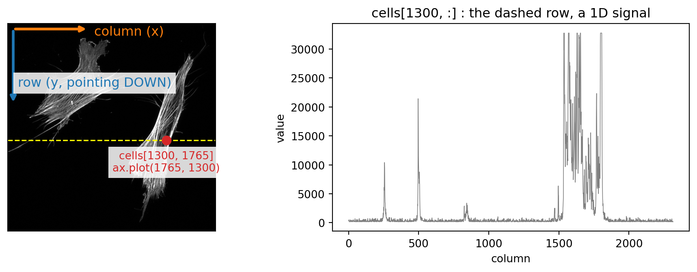
Arrays: image[row, column], origin top left, rows going down. Plots: ax.plot(x, y) = (column, row). Swapping them raises no error.
▶ notebook, part 1: Look
Colour: a third dimension
photo = io.imread("data/beans.jpg")
print(photo.shape, photo.dtype) # rows, columns, channels
fig, axes = plt.subplots(2, 2)
axes[0, 0].imshow(photo)
for ax, k, name in zip(axes.flat[1:], range(3),
["red", "green", "blue"]):
ax.imshow(photo[:, :, k], cmap="gray")
ax.set_title(name)
for ax in axes.flat:
ax.axis("off")(1932, 2576, 3) uint8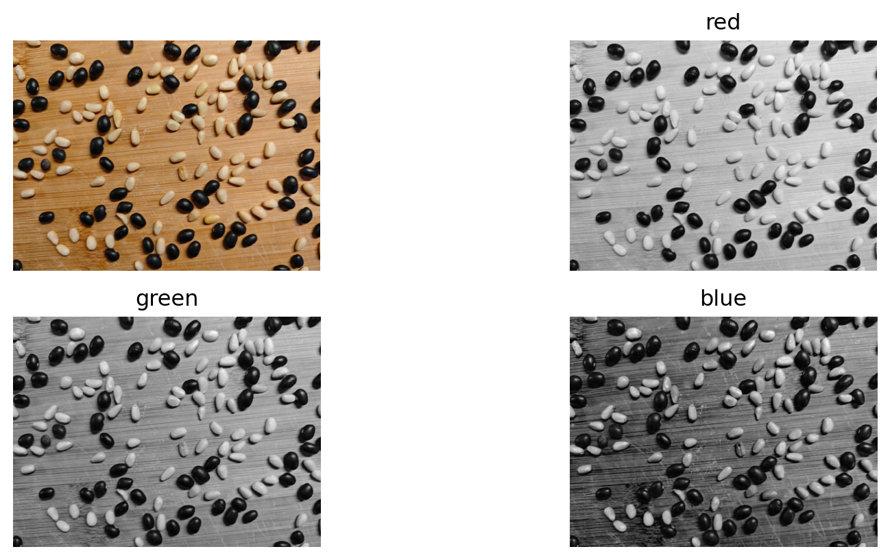
Pine nuts against the wooden board: 1.2 times brighter in the red channel, 1.7 times in the blue. Choosing a channel is a decision, and part of the method.
Two more things you will meet. PNG and TIFF can carry a fourth channel, alpha (transparency): shape (rows, columns, 4), and photo[:, :, :3] keeps the colours. And RGB is only one colour space: HSV (hue, saturation, value) or Lab separate the colour from the brightness, which helps when objects differ in colour but not in brightness (skimage.color.rgb2hsv, rgb2lab).
More dimensions
| Data | Shape | Example |
|---|---|---|
| one greyscale image | (rows, columns) | cells.tif: (2316, 2316) |
| a colour image | (rows, columns, 3) | beans.jpg: RGB |
| a z-stack | (planes, rows, columns) | confocal sections through a cell |
| a time-lapse | (times, rows, columns) | cells migrating |
| all of them | (t, z, channels, rows, columns) | a microscope’s own file |
Multi-page files
A multi-page TIFF stores several images in one file; reading it gives a 3D array:
(5, 300, 300)Which axis is which is not in the array: it is in the file’s metadata, or in your DEFINE.
How many grey levels?
| Bits | Levels | Range | Typical source |
|---|---|---|---|
| 8 | 256 | 0 – 255 | phones, screens, figures |
| 12 | 4096 | 0 – 4095 | scientific cameras |
| 16 | 65536 | 0 – 65535 | microscopes, medical |
A real microscopy image
int16 133 32767
at the maximum: 9741- int16: signed 16-bit integers, half of the range wasted on negative values that never occur
- 9741 pixels at exactly 32767, the largest int16: the detector was saturated there, and the true values are lost
The numbers that are not pixels
The file also carries metadata:
PhysicalSizeX 0.0915943436960275
LensNA 1.3The pixel size (µm) turns pixels into lengths: 2316 × 0.0916 ≈ 212 µm. A PNG, a JPEG or a screenshot does not keep it: once lost, every measurement is in pixels.
Where metadata live
| Format | Metadata | What you find there |
|---|---|---|
| OME-TIFF | an XML document inside the TIFF (ome_metadata) |
pixel size, objective, channels, z and t steps: a standard for microscopy |
| ImageJ TIFF | key=value text in the TIFF description |
pixel size, number of slices and frames |
.czi, .lif, .nd2 |
the instrument’s own format | everything the microscope knew; read with bioio |
DICOM (.dcm) |
standard tags | pixel spacing, slice thickness, patient and scanner data |
HDF5 (.h5, Imaris .ims) |
attributes attached to each dataset | whatever the writer stored: units, scales, settings |
| JPEG, some TIFFs | EXIF | camera, exposure, date, GPS; usually not a pixel size |
| PNG | a few text fields, dots per inch | rarely anything useful for measuring |
BMP, raw .npy |
none | the numbers only: keep the pixel size yourself |
Rule: read the metadata once, check it against what you know (a pixel size of 0.09 µm at 40× is plausible), and write the values you use into DEFINE.
Lossless and lossy files
crop8 = (cells[1000:1600, 1400:2000] // 128).astype(np.uint8)
io.imsave("copy.png", crop8)
io.imsave("copy.jpg", crop8, quality=90)
for name in ["copy.png", "copy.jpg"]:
back = io.imread(name)
changed = np.mean(back != crop8)
worst = np.abs(back.astype(int) - crop8).max()
print(f"{name}: {100 * changed:.0f}% of pixels "
f"changed, by up to {worst}")copy.png: 0% of pixels changed, by up to 0
copy.jpg: 78% of pixels changed, by up to 18| Format | Loss | Use |
|---|---|---|
| PNG, TIFF / OME-TIFF | none | figures; microscopy (any depth, pages, metadata) |
| JPEG | lossy | photos, never data (beans.jpg already is one) |
.czi, .lif, .nd2, DICOM |
none | instrument files: bioio, pydicom |
The display lies
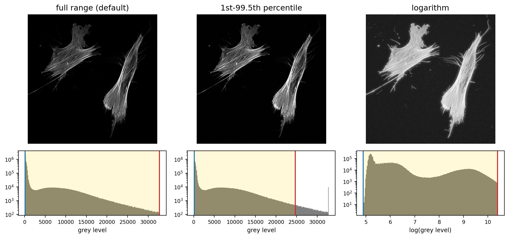
imshow maps the values between vmin (blue line: black) and vmax (red line: white) onto the grey scale; everything outside is clipped. Same data, three mappings. A non-linear display (a logarithm) must be stated in the legend.
Colormaps
The second choice of the display: which colour stands for which value (cmap).
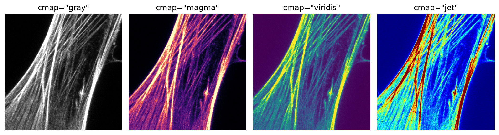
gray, magma, viridis: equal steps in value look like equal steps in colour. jet invents edges (yellow, cyan bands) where the data have none: avoid it. Always add a colour bar.
A colormap that checks the data
Grey where values are fine; blue below the range, red above it:
check = plt.get_cmap("gray").copy()
check.set_under("blue") # below vmin
check.set_over("red") # above vmax
fig, axes = plt.subplots(1, 2)
axes[0].imshow(cells, cmap=check,
vmin=cells.min() + 1, vmax=32766)
axes[1].imshow(cells, cmap=check,
vmin=300, vmax=32766) # vmin above the noise
axes[1].set_xlim(1450, 1950) # zoom on cell 2
axes[1].set_ylim(1500, 1000) # rows go down
for ax in axes:
ax.axis("off")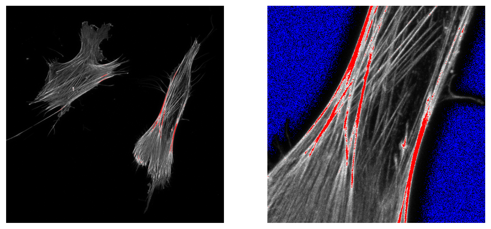
Red: saturated, the brightest fibres of cell 2, exactly where we would measure. Blue (right, vmin=300): the background noise, below 300; raising vmin keeps the grey scale for the cell. Microscopes show this same map live while you set gain and offset: saturation is fixed there, not in Python.
▶ notebook, part 2: Explore
What numpy won’t tell you, images edition
The week 2 overflow, now in an image: brighten the photo by 100.
uint8
[181 132 74] -> [ 25 232 174]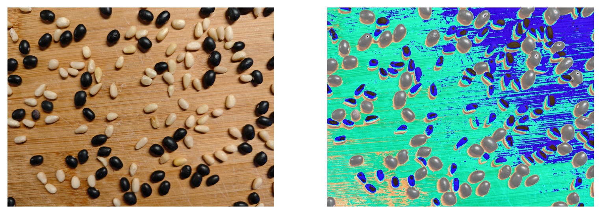
181 + 100 = 281 does not fit in 8 bits: it wraps round to 25, and the colours go wrong. No error, no warning. Convert first: photo.astype(float) + 100.
Pre-processing
Before objects can be found and measured, the image often needs preparing:
- noise: random variation from pixel to pixel
- uneven illumination: the same object brighter on one side of the field
Each correction changes the data: a step with a rule and a diagnosis, like any other. Its parameters (sizes) are in pixels, and should be decided in µm.
Neighbourhood filters
A new value for each pixel, computed from a small window of pixels around it; the window slides over the whole image.
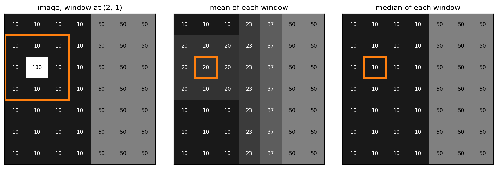
The orange window holds 8 pixels at 10 and the spike at 100: its mean is (8 × 10 + 100) / 9 = 20, its median 10. The mean spreads the spike and softens the edge; the median removes the spike and keeps the edge sharp.
Neighbourhood filters: the named functions
| Filter | The rule in each window | Function |
|---|---|---|
| mean (“box”) | the average | ndimage.uniform_filter(image, size=3) |
| Gaussian | an average weighted more at the centre | filters.gaussian(image, sigma=1.5) |
| median | the middle value | ndimage.median_filter(image, size=3) |
| minimum, maximum | the darkest, the brightest | ndimage.minimum_filter, maximum_filter |
The window size (size, sigma) is the decision: in pixels, chosen in µm, against the size of what you want to keep. (A weighted average computed this way is called a convolution, and the weights a kernel: words you will meet in the documentation and in the AI’s code.)
Smoothing: Gaussian and median
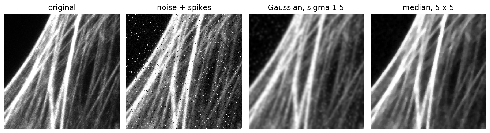
Both look cleaner, and both blur the thin fibres. Keep sigma and size well below the size of what you want to keep.
A neighbourhood filter for the background
Make the window much larger than any object: the objects disappear, and what is left is the slow change underneath. A profile along a row, with objects on an uneven background:
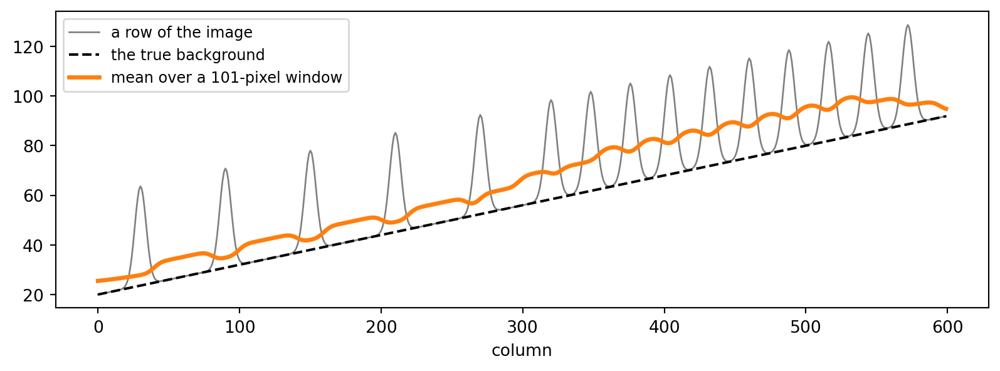
The large window gives a smooth curve, but it averages the objects in: it sits above the background, more where objects are dense (on the right). How much above? Next: try it, and predict it.
▶ notebook, part 3: First attempt
What scikit-image won’t tell you
What happened in the notebook, here on our microscopy image:
int16 32767
float64 0.999
float64 32750.0Integer images become floats in 0–1 unless preserve_range=True. Also: results come as (row, column); filters invent pixels beyond the border (mode=); every size is in pixels. Print shape, dtype and range after every step.
Local or global?
The same row as before, three estimates of the background:
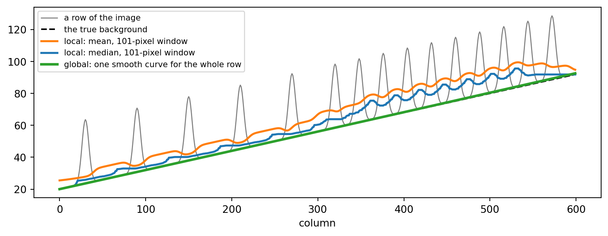
The median ignores the objects where they are sparse (left), not where they fill half the window (right). The global curve stays on the background everywhere: it sees the whole row at once, treats the objects as outliers, and is too smooth to follow them.
Local or global: what each estimate sees
| local: a window around each pixel | global: one smooth surface for the whole field | |
|---|---|---|
| what it sees | the objects inside the window: the mean averages them in, the median ignores them only if they fill less than half of it | every background pixel at once; the objects are outliers, refitted out |
| which changes it can follow | anything slower than the window: the window must be larger than the objects and smaller than the changes of the light | only the slowest (a tilt, a bowl): never the objects’ detail |
| fails when | objects are dense, or as large as the window | the light itself has fine structure (a dark corner, dust) |
And then how to combine image and estimate. The common tools subtract (Fiji’s Process › Subtract Background, scikit-image’s rolling_ball examples: image - background), which assumes the light adds. Any estimate can also divide; our seeds said the light multiplies. Two decisions, then: how to estimate (local or global), and how to combine (subtract or divide).
Estimating the illumination
| Method | Local or global | Idea | Where to find it |
|---|---|---|---|
| a large blur | local | average the neighbourhood | filters.gaussian |
| a large median | local | the middle value of the neighbourhood | ndimage.median_filter |
| “rolling ball” | local | the floor under the objects | restoration.rolling_ball |
| a fitted smooth surface | global | refit without what stands out | np.linalg.lstsq (least squares) |
| a flat-field image | measured | photograph an empty field | divide by it: the best, when you can |
Where to look for an algorithm
You know what the step must do (“remove uneven background”). Where do candidate methods come from?
- Name the problem: the words experts use are the search keys: background subtraction, flat-field correction, rolling ball, shading correction
- The gallery: scikit-image’s examples gallery is organised by task, each example a short script with figures; the API reference lists every function by submodule
- Fiji’s menus are a catalogue of standard methods with their names (Process › Subtract Background is the rolling ball)
- Ask the AI for options, not for code: “list three ways to correct uneven illumination in a microscopy image, with the assumption each one makes and when it fails”
- Reviews and textbooks for the reasons behind the methods
Each source gives candidates. Which one becomes the step is decided by your criterion, on digital and real data.
▶ notebook, part 4: Second attempt, VALIDATE
Tutorial
An 8-bit copy of cells.tif, for a figure.
- DEFINE: the mapping, the limits, the criterion
- DECOMPOSE: limits; convert; save and show, with a scale bar
- SPECIFY ⇄ DIAGNOSE with digital values worked out by hand
- VALIDATE: limits from one cell, checked on the other
Bring: lec04_src/data/cells.tif, and imagecodecs in your .venv.
Assignment 3
Clean the image, keep the fibres. A confocal image from a camera with faulty pixels, stuck black or white. Remove them without damaging the fibres.
A good result, measured against the clean image (given):
- fibres preserved: a small average difference on the fibre pixels (brighter than 100)
- noise removed: a small average difference on all the other pixels
- both better than doing nothing (about 6.4 grey levels each)
Your method, your digital data, your evidence. Instructions, data and deadline on Moodle.
Take-home message
- An image is an array: shape, (row, column), channels, dtype, range, pixel size. Print them.
- 8 bits wrap round, libraries rescale, detectors saturate, JPEG changes data, displays are choices
- Every filter is a step with a rule; sizes in pixels, decided in µm
- Light multiplies: correct illumination by dividing
- Digital images in the same representation as the real ones
- Methods are candidates: the criterion, in numbers, chooses

ENG3090 Biomedical Engineering Skills 3